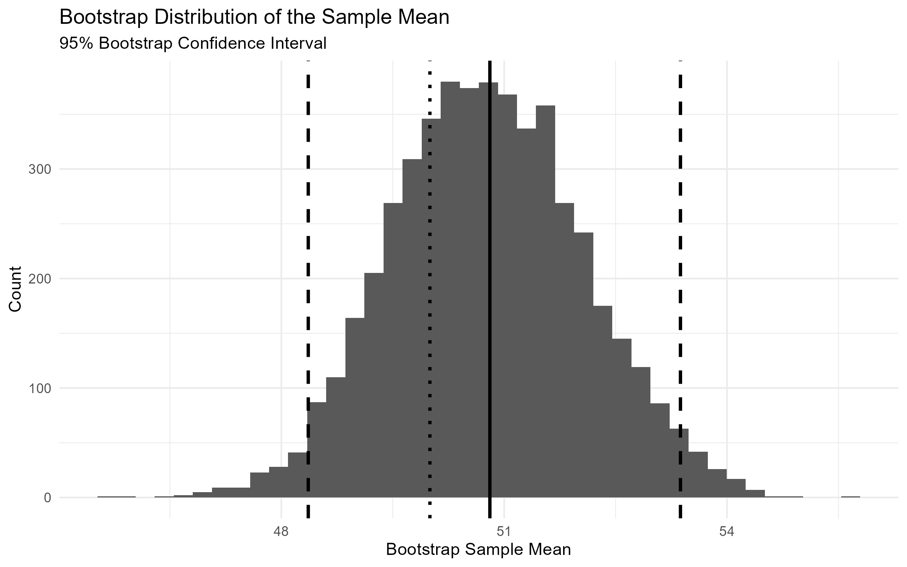
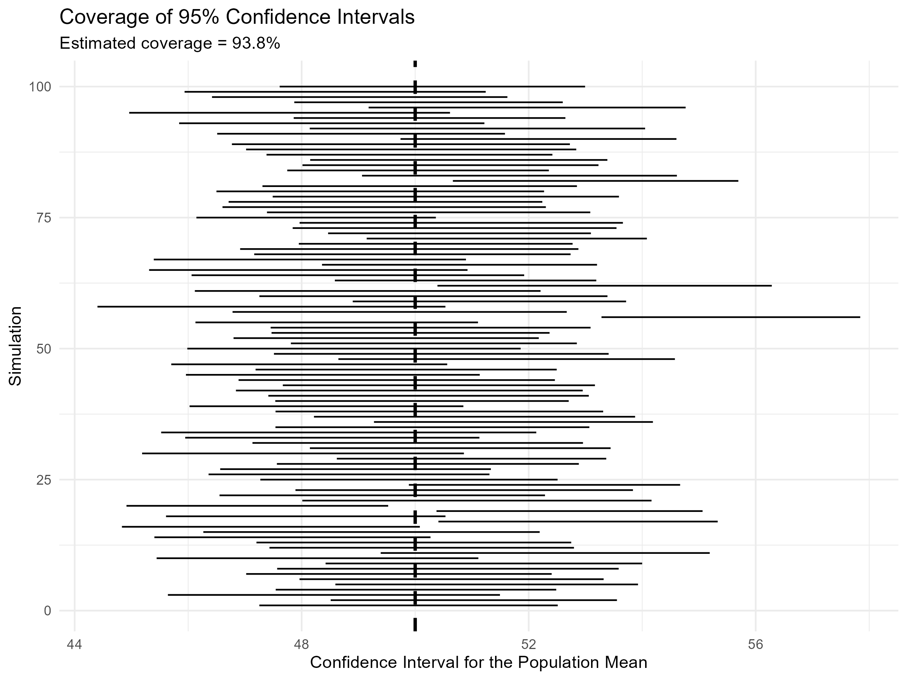
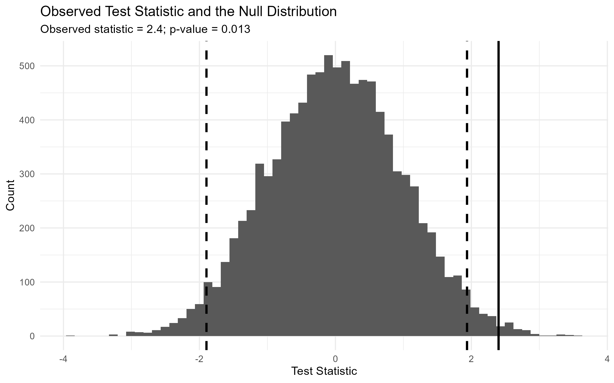

Simulation, Bootstrap Confidence Intervals, and Hypothesis Testing
Introduction
Statistical inference is about learning something about a population from a sample. However, concepts such as confidence intervals and p-values can be difficult to understand from formulas alone.
Simulation provides an intuitive way to see how these ideas work. Instead of starting with theoretical distributions, we can repeatedly generate data and observe what happens.
In this post, I use simulation to demonstrate three ideas:
- how a bootstrap confidence interval is constructed;
- why a 95% confidence interval covers the true parameter approximately 95% of the time; and
- how hypothesis tests use a null distribution, rejection regions, and p-values.
The goal is to understand statistical inference by seeing the distributions generated by repeated samples.
1. Building a Bootstrap Confidence Interval
Suppose the population has a mean of 50 and a standard deviation of 10. We draw a sample of 50 observations from this population.
In practice, we usually do not know the population distribution. More importantly, we only have one observed sample. The bootstrap provides a way to approximate the sampling distribution of an estimator using the sample itself.
The procedure is:
- Draw one sample from the population.
- Treat the observed sample as an approximation to the population.
- Repeatedly draw new samples from the observed sample with replacement.
- Calculate the sample mean for each bootstrap sample.
- Use the resulting bootstrap distribution to construct a confidence interval.
Here, I generate 5,000 bootstrap samples.

The histogram shows the distribution of the means calculated from the bootstrap samples. The solid vertical line represents the original sample mean, while the two dashed lines mark the lower and upper bounds of the 95% bootstrap confidence interval. The dotted line marks the true population mean.
The important point is that the bootstrap distribution represents the variation we would expect in the sample mean if we repeatedly resampled from the population. Since the population itself is unavailable in a real empirical application, the observed sample provides the information needed to approximate this distribution.
The confidence interval is then constructed from the tails of the bootstrap distribution:
\[ CI_{95\%} = \left[ Q_{0.025}, Q_{0.975} \right] \]
where \(Q_{0.025}\) and \(Q_{0.975}\) are the 2.5th and 97.5th percentiles of the bootstrap distribution.
Try It Yourself
The following interactive visualization lets you change the sample size, number of bootstrap samples, confidence level, and true population mean.
The interactive demonstration makes several patterns visible.
A larger sample generally produces a narrower bootstrap distribution because the sample mean becomes more precise. Increasing the number of bootstrap samples makes the simulated distribution more stable, while changing the confidence level changes how much of the bootstrap distribution is included in the interval.
The interactive visualization is generated as a standalone HTML file, so the simulation runs directly in the browser. The controls allow the reader to change the parameters and immediately see how the bootstrap distribution and confidence interval respond.
2. Does a 95% Confidence Interval Really Cover the Truth 95% of the Time?
A single confidence interval either contains the true population parameter or it does not. The meaning of a 95% confidence level becomes clearer when we repeat the entire sampling process many times.
For each simulation, I:
- draw a new sample from the population;
- construct a bootstrap confidence interval;
- check whether the interval contains the true population mean of 50.
I repeat this process 1,000 times.

Each horizontal line represents one simulated confidence interval. The vertical dashed line represents the true population mean.
In the simulation, 93.8% of the intervals contain the true population mean.
This is close to the intended 95% coverage rate. The result is not exactly 95% because the experiment itself is random: with only 1,000 simulations, the estimated coverage rate will naturally fluctuate around the target.
The key idea is therefore about repeated sampling. A 95% confidence procedure is designed so that, over many repeated samples, approximately 95% of the resulting intervals contain the true parameter.
This interpretation is different from saying that there is a 95% probability that the particular interval calculated from one sample contains the parameter. Once the interval has been calculated, the parameter either lies inside it or it does not. The 95% refers to the long-run performance of the procedure.
3. Simulating a Hypothesis Test
Confidence intervals are one way to quantify uncertainty. Hypothesis testing provides another way to ask whether an observed result is unusual under a particular assumption.
Suppose we want to test:
\[ H_0: \mu = 50 \]
against the two-sided alternative:
\[ H_1: \mu \neq 50 \]
The first step is to simulate what the test statistic would look like if the null hypothesis were true.
For each simulation, I generate a sample from a population with mean 50 and standard deviation 10. I then calculate the standardized test statistic:
\[ Z = \frac{\bar{X}-\mu_0} {\sigma/\sqrt{n}} \]
Repeating this process 10,000 times produces an empirical null distribution.
The distribution is centered around zero because the samples are generated under the null hypothesis. Most simulated test statistics are relatively close to zero, while values far from zero are less common.
For a two-sided test with significance level \(\alpha=0.05\), the most extreme 5% of the null distribution defines the rejection region.
The dashed lines in the figure mark these critical regions. If an observed test statistic falls beyond either boundary, it would be sufficiently unusual under the null hypothesis to reject \(H_0\) at the 5% significance level.
This gives us a useful visual interpretation of hypothesis testing:
The rejection region consists of outcomes that are sufficiently unusual under the null hypothesis.
4. From Rejection Regions to p-Values
Instead of simply asking whether the observed statistic crosses a critical value, we can ask a more general question:
How unusual is the observed statistic under the null hypothesis?
Suppose the observed test statistic is:
\[ z_{obs}=2.4 \]
We can compare this value with the simulated null distribution.

Because this is a two-sided test, we consider simulated statistics at least as far from zero as the observed statistic. In other words, we count simulations satisfying
\[ |Z| \geq |z_{obs}|. \]
The simulated p-value is therefore
\[ p = P\left(|Z|\geq |z_{obs}| \mid H_0\right). \]
In the simulation, the estimated p-value is 0.013.
This means that approximately 1.3% of the simulated test statistics under the null hypothesis were at least as extreme as the observed statistic.
Since
\[ 0.013 < 0.05, \]
the observed statistic falls in the rejection region, and we reject the null hypothesis at the 5% significance level.
The visualization makes the relationship between the two concepts clear:
- Rejection region: a pre-defined region of sufficiently unusual outcomes based on the chosen significance level.
- p-value: the probability, under the null hypothesis, of observing a test statistic at least as extreme as the one actually observed.
The p-value is therefore not the probability that the null hypothesis is true. It measures how unusual the observed result is under the assumption that the null hypothesis is true.
5. What the Simulations Show
The simulations connect several ideas that are often introduced separately.
Bootstrap confidence intervals
A bootstrap distribution is created by repeatedly resampling from the observed sample. It provides an empirical approximation to the sampling distribution of an estimator and can be used to construct a confidence interval.
Confidence interval coverage
A 95% confidence procedure is designed to contain the true parameter in approximately 95% of repeated samples. In the simulation, 93.8% of the intervals contained the true mean, illustrating this long-run interpretation.
Hypothesis testing
A null distribution shows what the test statistic looks like when the null hypothesis is true. Observations in the tails of this distribution are less consistent with the null hypothesis.
Rejection regions and p-values
The rejection region identifies outcomes sufficiently extreme to reject the null at a chosen significance level. The p-value measures how much probability under the null lies at or beyond the observed test statistic.
Takeaways
Simulation makes statistical inference visible. Repeatedly generating samples allows us to see the distributions behind confidence intervals and hypothesis tests.
Bootstrap confidence intervals use the observed sample to approximate sampling uncertainty. Repeated resampling produces a bootstrap distribution from which the interval can be constructed.
A 95% confidence level describes long-run coverage. In repeated sampling, approximately 95% of intervals constructed by the procedure should contain the true population parameter.
Hypothesis tests compare observed statistics with a null distribution. Values far into the tails are unusual under the null hypothesis and may fall in the rejection region.
A p-value measures extremeness under the null hypothesis. It is the probability of obtaining a test statistic at least as extreme as the observed one, assuming the null hypothesis is true.
The central idea throughout this post is simple: statistical inference can be understood by repeatedly simulating the data-generating process and observing how estimates and test statistics behave.